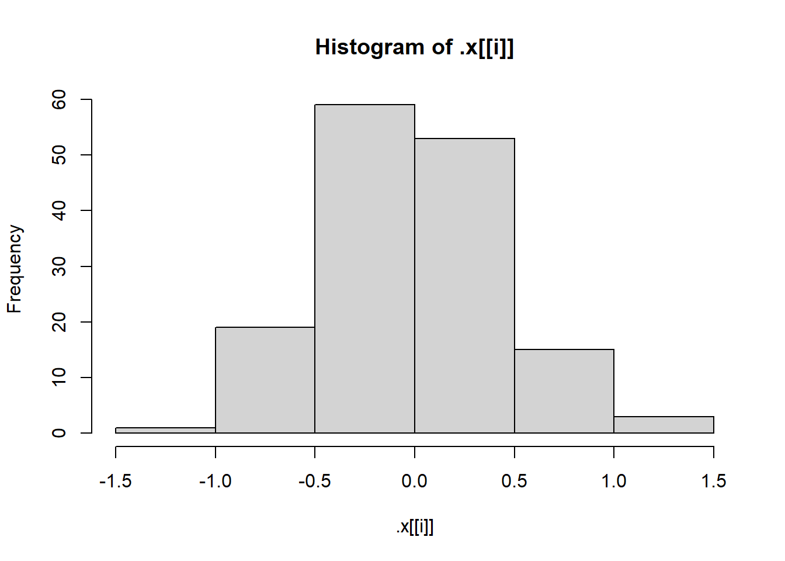
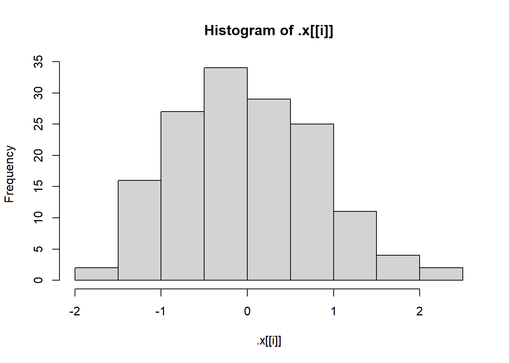
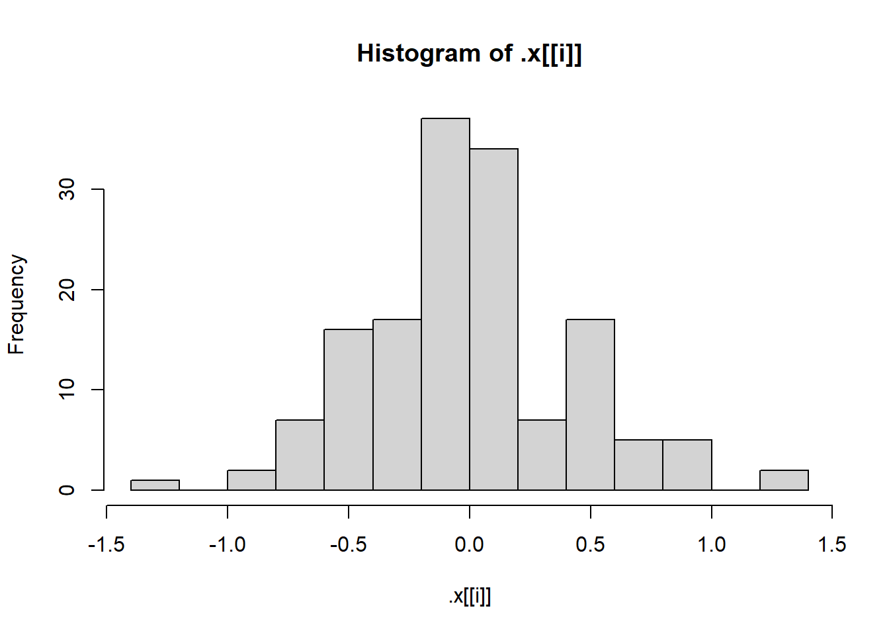
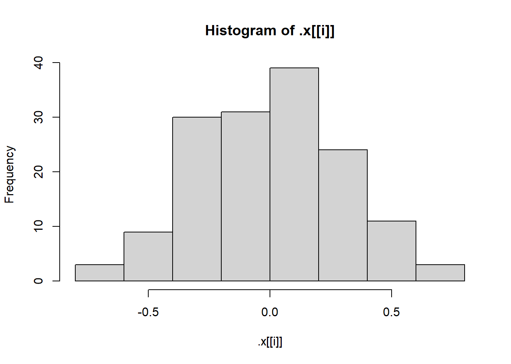
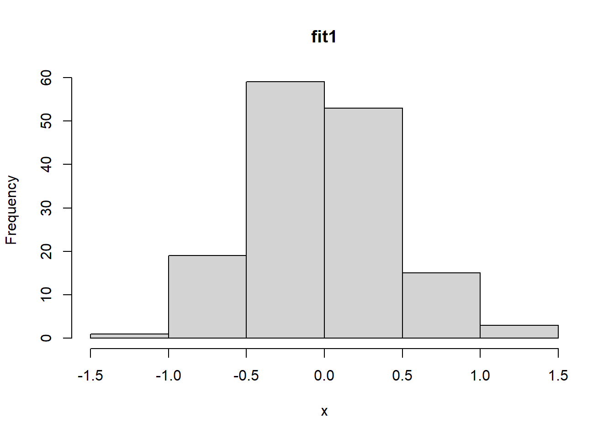
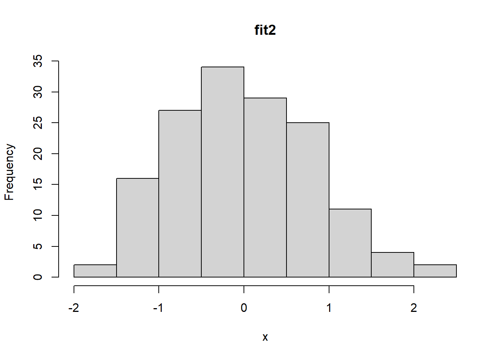
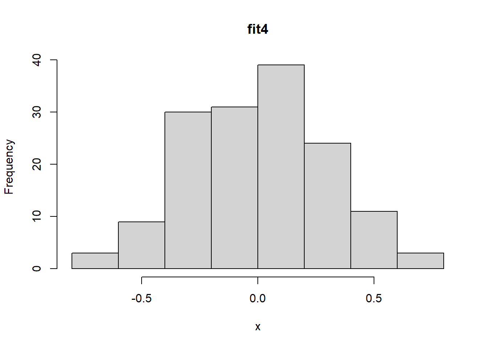

getRMSE <- function(response_vector, prediction_vector, ...) {
RMSE <- sqrt(mean((response_vector - prediction_vector)^2, ...))
RMSE
}Homework 6
Task 1: Conceptual Questions
- What is the purpose of the lapply() function? What is the equivalent purrr function?
The lapply() function is a base R function that accepts a list and a function as inputs, and applies the function to the elements of the list. The output is also a list. The equivalent purrr function is map().
- Suppose we have a list called my_list. Each element of the list is a numeric data frame (all columns are numeric). We want to use lapply() to run the code cor(numeric_matrix, method = “kendall”) on each element of the list. Write code to do this below! (I’m really trying to ask you how you specify method = “kendall” when calling lapply().)
To give additional arguments to the function entered in lapply(), add them on after the function specification:
lapply(my_list, cor, method = "kendall")
- What are two advantages of using purrr functions instead of the BaseR apply family?
Purrr functions are the tidyverse alternatives to the apply family of functions in BaseR. The two main advantages of using purrr functions instead of apply family functions are more consistency and some helper functions. Additional advantages include shorthand for referring to elements of a data object and shorthand for anonymous functions.
- What is a side-effect function?
A side effect function is one that produces something, like printing or plotting, but does not return a value like a transformation function does. The invisible() function can be used so that a side-effect function does return an unchanged value in addition to producing the side effect.
- Why can you name a variable sd in a function and not cause any issues with the sd function?
R has environments. The sd function exists within the stats package environment. A variable named sd within a written function exists within the temporary environment for that written function, so the two do not affect each other.
Task 2: Writing R Functions
- Write a basic function (call it getRMSE()) that takes in a vector of responses and a vector of predictions and outputs the RMSE.
- Run the following code to create some response values and predictions.
set.seed(10)
n <- 100
x <- runif(n)
resp <- 3 + 10 * x + rnorm(n)
pred <- predict(lm(resp ~ x), data.frame(x))Test your RMSE function using this data.
getRMSE(resp, pred)[1] 0.9581677getRMSE(resp, pred, na.rm = TRUE)[1] 0.9581677Repeat the test after manually replacing two of the response values with missing values (NA_real_)
- Replace two resp values with NA’s
set.seed(5)
resp_NA <- resp
resp_NA[runif(1, 1, 100)] <- NA_real_
resp_NA[runif(1, 1, 100)] <- NA_real_
resp_NA [1] 7.674144 5.733128 8.637031 12.068788 4.357179 6.040709 4.843093
[8] 6.255948 8.512399 7.587703 8.278962 8.221201 3.304767 9.299369
[15] 7.646876 8.504220 4.254724 5.160568 7.550652 NA 12.028134
[22] 7.723097 9.702653 6.337183 5.568563 11.239175 9.903050 4.965503
[29] 9.656077 8.081564 8.948798 3.708220 5.410925 12.714925 7.666618
[36] 10.636295 11.886290 14.767056 8.670500 7.931076 5.338484 5.097557
[43] 3.213884 11.444994 6.093762 3.192188 1.563749 8.753929 4.177170
[50] 12.242498 5.781476 12.783701 4.418721 8.442989 4.282396 9.395394
[57] 8.255719 6.016290 8.026494 9.180810 2.038727 5.273544 7.225220
[64] 6.654107 12.260485 10.688362 9.773488 NA 5.093565 6.142304
[71] 3.274337 8.547150 9.381826 7.061813 4.016495 7.543794 6.976389
[78] 11.550401 5.209433 3.872522 13.043037 8.277356 3.231859 8.553664
[85] 4.576422 2.213665 11.475262 6.469006 5.333390 5.656304 6.209727
[92] 8.908905 6.956097 9.642321 7.188749 12.413663 6.020730 8.507994
[99] 11.776177 3.387353- test getRMSE function with data with NA’s, with and without adding argument to remove NA’s
getRMSE(resp_NA, pred)[1] NAgetRMSE(resp_NA, pred, na.rm = TRUE)[1] 0.9539605- Write a function called getMAE() that follows the specifications of the getRMSE() function.
getMAE <- function(response_vector, prediction_vector, ...) {
MAE <- mean(abs(response_vector - prediction_vector), ...)
MAE
}- Run the following code to create some response values and predictions.
set.seed(10)
n <- 100
x <- runif(n)
resp <- 3 + 10 * x + rnorm(n)
pred <- predict(lm(resp ~ x), data.frame(x))- Test your MAE function using this data.
getMAE(resp, pred)[1] 0.8155776getMAE(resp, pred, na.rm = TRUE)[1] 0.8155776- Repeat after replacing two of the response values with missing values (NA_real_).
Replace two resp values with NA’s:
set.seed(7)
resp_NA <- resp
resp_NA[runif(1, 1, 100)] <- NA_real_
resp_NA[runif(1, 1, 100)] <- NA_real_
resp_NA [1] 7.674144 5.733128 8.637031 12.068788 4.357179 6.040709 4.843093
[8] 6.255948 8.512399 7.587703 8.278962 8.221201 3.304767 9.299369
[15] 7.646876 8.504220 4.254724 5.160568 7.550652 10.115022 12.028134
[22] 7.723097 9.702653 6.337183 5.568563 11.239175 9.903050 4.965503
[29] 9.656077 8.081564 8.948798 3.708220 5.410925 12.714925 7.666618
[36] 10.636295 11.886290 14.767056 8.670500 NA 5.338484 5.097557
[43] 3.213884 11.444994 6.093762 3.192188 1.563749 8.753929 4.177170
[50] 12.242498 5.781476 12.783701 4.418721 8.442989 4.282396 9.395394
[57] 8.255719 6.016290 8.026494 9.180810 2.038727 5.273544 7.225220
[64] 6.654107 12.260485 10.688362 9.773488 8.216967 5.093565 6.142304
[71] 3.274337 8.547150 9.381826 7.061813 4.016495 7.543794 6.976389
[78] 11.550401 5.209433 3.872522 13.043037 8.277356 3.231859 8.553664
[85] 4.576422 2.213665 11.475262 6.469006 5.333390 5.656304 6.209727
[92] 8.908905 6.956097 9.642321 7.188749 12.413663 6.020730 NA
[99] 11.776177 3.387353Test your MAE function with and without specifying the behavior to deal with missing values.
getMAE(resp_NA, pred)[1] NAgetMAE(resp_NA, pred, na.rm = TRUE)[1] 0.8306058- Create wrapper function
get_error <- function(response_vector, prediction_vector, function1, function2, ...) {
if (!is.atomic(response_vector) | !is.numeric(response_vector)) {
stop("Please enter a numeric atomic vector for the response vector.")
}
if (!is.atomic(prediction_vector) | !is.numeric(prediction_vector)) {
stop("Please enter a numeric atomic vector for the prediction vector.")
}
if (missing(function1) & missing(function2)) {
RMSEvalue <- getRMSE(response_vector, prediction_vector, ...)
MAEvalue <- getMAE(response_vector, prediction_vector, ...)
result_list <- list(RMSE = RMSEvalue, MAE = MAEvalue)
result_list
} else if (!missing(function1) & missing(function2)) {
if (function1 == "RMSE") {
RMSEvalue <- getRMSE(response_vector, prediction_vector, ...)
result_list <- list(RMSE = RMSEvalue)
result_list
} else if (function1 == "MAE") {
MAEvalue <- getMAE(response_vector, prediction_vector, ...)
result_list <- list(MAE = MAEvalue)
result_list
}
} else if (!missing(function1) & !missing(function2)) {
RMSEvalue <- getRMSE(response_vector, prediction_vector, ...)
MAEvalue <- getMAE(response_vector, prediction_vector, ...)
result_list <- list(RMSE = RMSEvalue, MAE = MAEvalue)
result_list
}
}- Run the following code to create some response values and predictions.
set.seed(10)
n <- 100
x <- runif(n)
resp <- 3 + 10 * x + rnorm(n)
pred <- predict(lm(resp ~ x), data.frame(x))- Test your new function using this data. Call it once asking for each metric individually and once specifying both metrics
get_error(resp, pred)$RMSE
[1] 0.9581677
$MAE
[1] 0.8155776get_error(resp, pred, "RMSE", "MAE")$RMSE
[1] 0.9581677
$MAE
[1] 0.8155776get_error(resp, pred, "MAE", "RMSE")$RMSE
[1] 0.9581677
$MAE
[1] 0.8155776get_error(resp, pred, "RMSE")$RMSE
[1] 0.9581677get_error(resp, pred, "MAE")$MAE
[1] 0.8155776- Repeat with replacing two of the response values with missing values (NA_real_).
Adding two NA’s to response vector:
set.seed(20)
resp_NA <- resp
resp_NA[runif(1, 1, 100)] <- NA_real_
resp_NA[runif(1, 1, 100)] <- NA_real_
resp_NA [1] 7.674144 5.733128 8.637031 12.068788 4.357179 6.040709 4.843093
[8] 6.255948 8.512399 7.587703 8.278962 8.221201 3.304767 9.299369
[15] 7.646876 8.504220 4.254724 5.160568 7.550652 10.115022 12.028134
[22] 7.723097 9.702653 6.337183 5.568563 11.239175 9.903050 4.965503
[29] 9.656077 8.081564 8.948798 3.708220 5.410925 12.714925 7.666618
[36] 10.636295 11.886290 14.767056 8.670500 7.931076 5.338484 5.097557
[43] 3.213884 11.444994 6.093762 3.192188 1.563749 8.753929 4.177170
[50] 12.242498 5.781476 12.783701 4.418721 8.442989 4.282396 9.395394
[57] 8.255719 6.016290 8.026494 9.180810 2.038727 5.273544 7.225220
[64] 6.654107 12.260485 10.688362 9.773488 8.216967 5.093565 6.142304
[71] 3.274337 8.547150 9.381826 7.061813 4.016495 7.543794 NA
[78] 11.550401 5.209433 3.872522 13.043037 8.277356 3.231859 8.553664
[85] 4.576422 2.213665 NA 6.469006 5.333390 5.656304 6.209727
[92] 8.908905 6.956097 9.642321 7.188749 12.413663 6.020730 8.507994
[99] 11.776177 3.387353Testing the wrapper function with the NA’s:
# test without handling NA's
get_error(resp_NA, pred)$RMSE
[1] NA
$MAE
[1] NAget_error(resp_NA, pred, "RMSE", "MAE")$RMSE
[1] NA
$MAE
[1] NAget_error(resp_NA, pred, "MAE", "RMSE")$RMSE
[1] NA
$MAE
[1] NAget_error(resp_NA, pred, "RMSE")$RMSE
[1] NAget_error(resp_NA, pred, "MAE")$MAE
[1] NA# test handling NA's
get_error(resp_NA, pred, na.rm = TRUE)$RMSE
[1] 0.9671473
$MAE
[1] 0.8268215get_error(resp_NA, pred, "RMSE", "MAE", na.rm = TRUE)$RMSE
[1] 0.9671473
$MAE
[1] 0.8268215get_error(resp_NA, pred, "MAE", "RMSE", na.rm = TRUE)$RMSE
[1] 0.9671473
$MAE
[1] 0.8268215get_error(resp_NA, pred, "RMSE", na.rm = TRUE)$RMSE
[1] 0.9671473get_error(resp_NA, pred, "MAE", na.rm = TRUE)$MAE
[1] 0.8268215- Test your function by passing it incorrect data:
# commented out these lines since it seems to keep doc from rendering and deploying
#get_error(penguins$species, penguins$islands)
#get_error(resp, penguins$islands)
#but they work for getting function to reject input data (one at a time)Task 3: Practice with Purrr
Let’s create an interesting list object we can play around with.
lm_fit1 <- lm(Sepal.Length ~ Sepal.Width + Species, data = iris)- Pull out the coefficients list element using $, coef(), and the pluck() function from purrr.
library(purrr) #load package
lm_fit1 #look at object
Call:
lm(formula = Sepal.Length ~ Sepal.Width + Species, data = iris)
Coefficients:
(Intercept) Sepal.Width Speciesversicolor Speciesvirginica
2.2514 0.8036 1.4587 1.9468 lm_fit1$coefficients (Intercept) Sepal.Width Speciesversicolor Speciesvirginica
2.2513932 0.8035609 1.4587431 1.9468166 coef(lm_fit1) (Intercept) Sepal.Width Speciesversicolor Speciesvirginica
2.2513932 0.8035609 1.4587431 1.9468166 pluck(lm_fit1, 1) (Intercept) Sepal.Width Speciesversicolor Speciesvirginica
2.2513932 0.8035609 1.4587431 1.9468166 pluck(lm_fit1,"coefficients") (Intercept) Sepal.Width Speciesversicolor Speciesvirginica
2.2513932 0.8035609 1.4587431 1.9468166 - Let’s fit a number of different models with the code below!
lm_fit2 <- lm(Sepal.Length ~ Sepal.Width, data = iris)
lm_fit3 <- lm(Sepal.Length ~ Petal.Width + Sepal.Width + Species, data = iris)
lm_fit4 <- lm(Sepal.Length ~ Petal.Width + Petal.Length + Sepal.Width + Species,
data = iris)
fits <- list(lm_fit1, lm_fit2, lm_fit3, lm_fit4)Now let’s use the purrr::map() function to pull out the coefficients of each model fit from the fits object (using pluck!).
map(fits, pluck("coefficients"))[[1]]
(Intercept) Sepal.Width Speciesversicolor Speciesvirginica
2.2513932 0.8035609 1.4587431 1.9468166
[[2]]
(Intercept) Sepal.Width
6.5262226 -0.2233611
[[3]]
(Intercept) Petal.Width Sepal.Width Speciesversicolor
2.5210733 0.3715768 0.6982260 0.9881297
Speciesvirginica
1.2375878
[[4]]
(Intercept) Petal.Width Petal.Length Sepal.Width
2.1712663 -0.3151552 0.8292439 0.4958889
Speciesversicolor Speciesvirginica
-0.7235620 -1.0234978 map(fits, pluck(1))[[1]]
(Intercept) Sepal.Width Speciesversicolor Speciesvirginica
2.2513932 0.8035609 1.4587431 1.9468166
[[2]]
(Intercept) Sepal.Width
6.5262226 -0.2233611
[[3]]
(Intercept) Petal.Width Sepal.Width Speciesversicolor
2.5210733 0.3715768 0.6982260 0.9881297
Speciesvirginica
1.2375878
[[4]]
(Intercept) Petal.Width Petal.Length Sepal.Width
2.1712663 -0.3151552 0.8292439 0.4958889
Speciesversicolor Speciesvirginica
-0.7235620 -1.0234978 - There is a function called confint() that creates confidence intervals for the coefficients in an lm() fit. We apply that function directly to the fitted object like this:
confint(lm_fit1) 2.5 % 97.5 %
(Intercept) 1.5206309 2.982156
Sepal.Width 0.5933983 1.013723
Speciesversicolor 1.2371791 1.680307
Speciesvirginica 1.7491525 2.144481Use map() to apply the confint() function to each model fit in the fits object.
map(fits, confint)[[1]]
2.5 % 97.5 %
(Intercept) 1.5206309 2.982156
Sepal.Width 0.5933983 1.013723
Speciesversicolor 1.2371791 1.680307
Speciesvirginica 1.7491525 2.144481
[[2]]
2.5 % 97.5 %
(Intercept) 5.579865 7.47258038
Sepal.Width -0.529820 0.08309785
[[3]]
2.5 % 97.5 %
(Intercept) 1.74261803 3.2995285
Petal.Width -0.02042746 0.7635811
Sepal.Width 0.46205710 0.9343950
Speciesversicolor 0.44520784 1.5310516
Speciesvirginica 0.46412393 2.0110518
[[4]]
2.5 % 97.5 %
(Intercept) 1.6182321 2.72430044
Petal.Width -0.6140049 -0.01630542
Petal.Length 0.6937939 0.96469395
Sepal.Width 0.3257653 0.66601260
Speciesversicolor -1.1982739 -0.24885002
Speciesvirginica -1.6831329 -0.36386273- Next, let’s create histograms of the residuals in each model fit! Run the code here to set up a 2x2 plotting window.
par(mfrow = c(2, 2))Now, pull out the residual vectors (the resid elements of your fits) using map(). Then use the walk() function with hist to create plots.
map(fits, pluck("residuals")) |>
walk(hist)


- On the list that is created from the map() function used on the resid element, use the purrr::set_names() function to give the names “fit1”, “fit2”, “fit3”, and “fit4” to the list elements. With the names set, we now want to use the walk() function. However, it doesn’t add the names appropriately!
map(fits, pluck("residuals")) |>
set_names(nm = c("fit1", "fit2", "fit3", "fit4")) |>
walk(hist)



Instead, we want to use iwalk(). On the result that has names, use iwalk() with an anonymous function that calls hist() and assigns the names appropriately.
map(fits, pluck("residuals")) |>
set_names(nm = c("fit1", "fit2", "fit3", "fit4")) |>
iwalk( \(x, idx) hist(x, main = idx))

